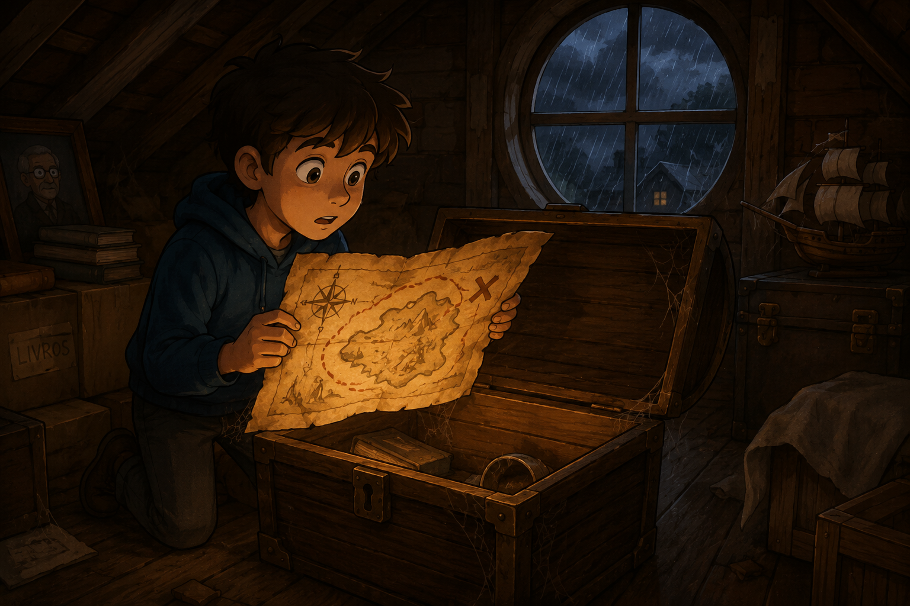
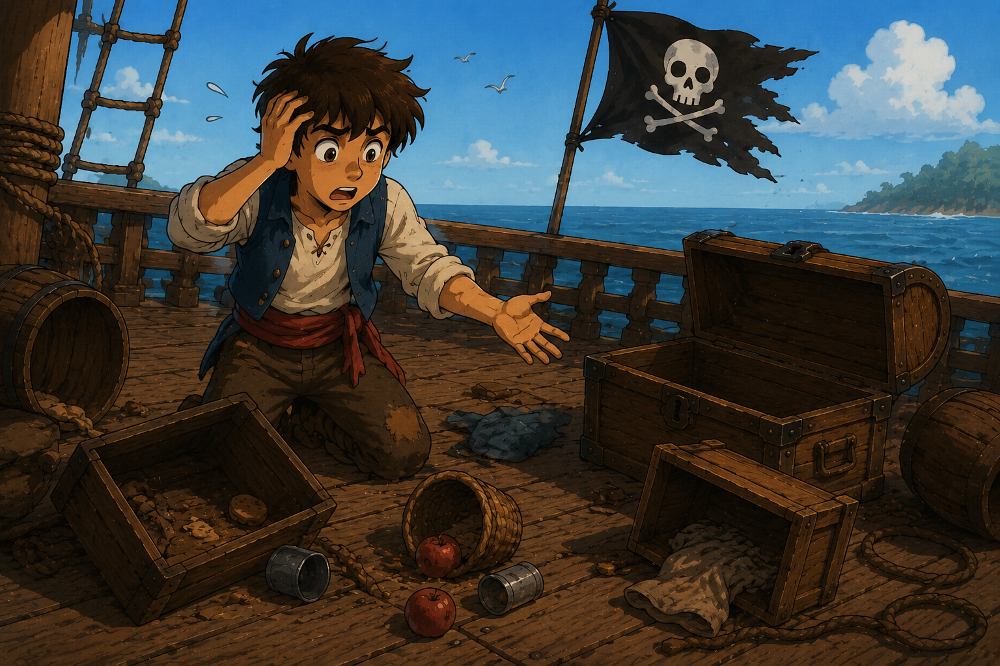
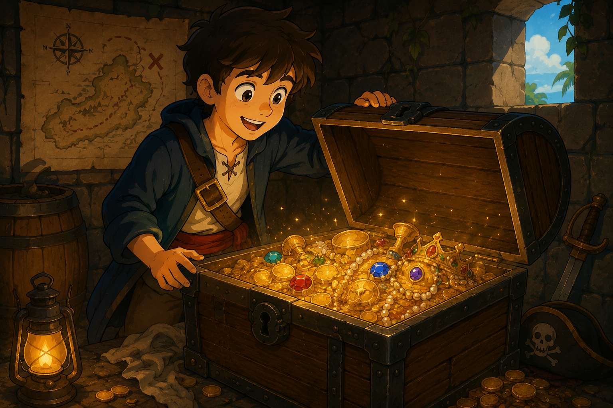
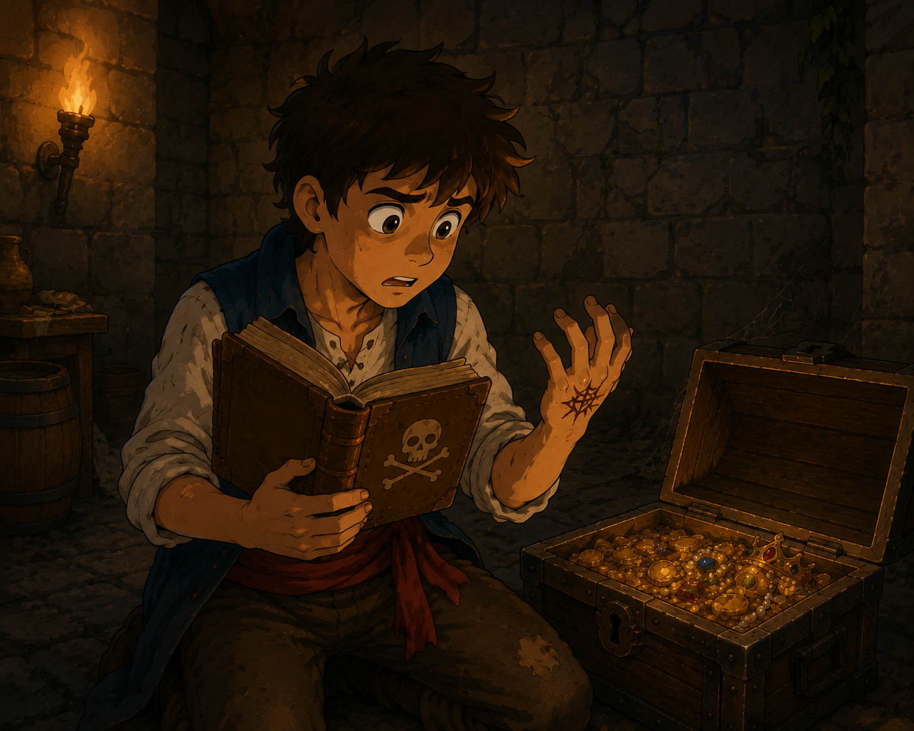

Caça ao Tesouro Pirata

Em uma tarde chuvosa, enquanto explorava o sótão da casa do meu avô, encontrei um velho mapa pirata escondido dentro de um baú empoeirado. No mapa, havia pistas sobre um lendário tesouro perdido em uma ilha misteriosa. Sem pensar duas vezes, decidi embarcar nessa aventura!
Você enfrenta ondas gigantes e ventos fortes, mas consegue sobreviver à tempestade. No horizonte, uma pequena ilha aparece escondida pela neblina.
Navegando pelas ilhas tranquilas, você encontra um velho pescador que fala sobre uma caverna secreta onde piratas escondiam riquezas.
Na ilha, você encontra marcas de botas na areia e um pedaço de mapa preso em uma árvore.

Enquanto conserta o navio, piratas inimigos roubam todos seus suprimentos, acabando com a sua viagem.
Dentro da caverna, você encontra uma bússola dourada que aponta diretamente para a ilha do tesouro.
Você se perde em mar aberto e acaba retornando ao mesmo lugar horas depois.
Você chega à ilha do tesouro. No centro dela existe uma antiga fortaleza pirata com dois caminhos diferentes.
A porta principal estava armadilhada. Você consegue escapar, mas perde muito tempo.
A passagem subterrânea leva diretamente até a sala do tesouro, onde além do baú do tesouro, você também encontra um diário velho de um antigo capitão pirata.
Depois de procurar pela fortaleza, você encontra a passagem subterrânea escondida, que leva diretamente até a sala do tesouro, onde além do baú do tesouro, você também encontra um diário velho de um antigo capitão pirata, porém ele está completamente encharcado, o que o torna ilegivel.

Dentro do baú, você encontra moedas de ouro e joias raras. Sua aventura termina com a descoberta do lendário tesouro perdido!

Ao ler o diário do capitão antes de abrir completamente o baú, você descobre a verdade escondida por trás do tesouro. O antigo capitão escreveu que as moedas e joias estavam amaldiçoadas, e que qualquer pessoa que levasse o tesouro da ilha carregaria consigo uma maldição eterna. Em uma das últimas páginas do diário, estava escrito: “Eu não protejo este tesouro para mantê-lo seguro do mundo. Eu o protejo para manter o mundo seguro dele.”. Você percebe então que, ao tocar no ouro, uma estranha marca apareceu em sua mão. Nesse momento, você entende que o verdadeiro final da aventura já havia começado.